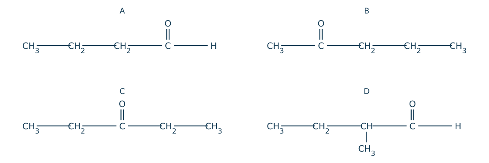
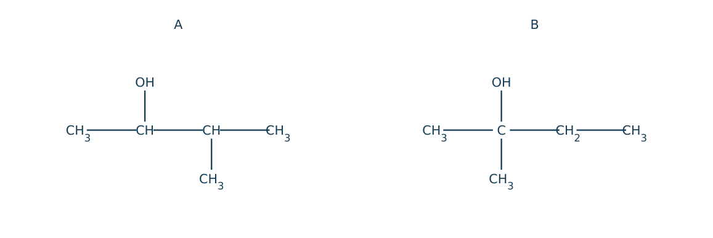
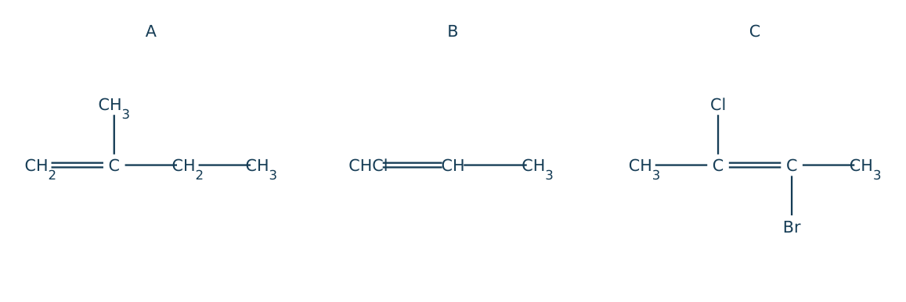
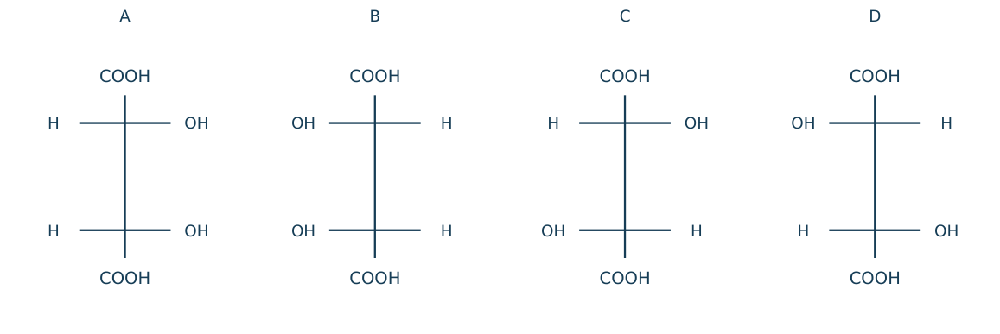
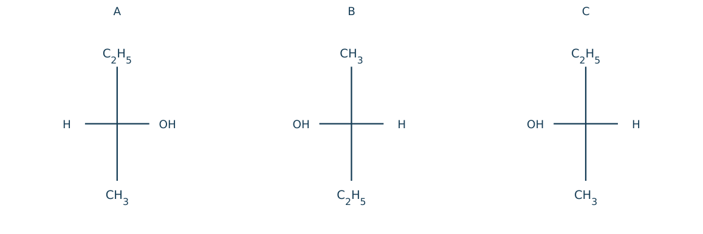
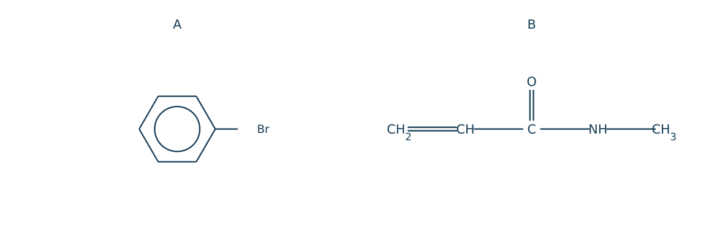
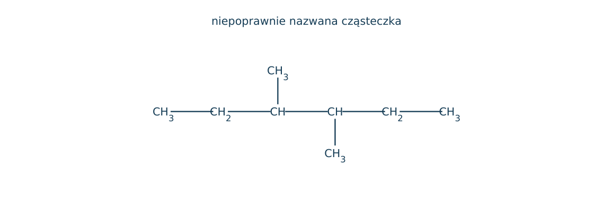
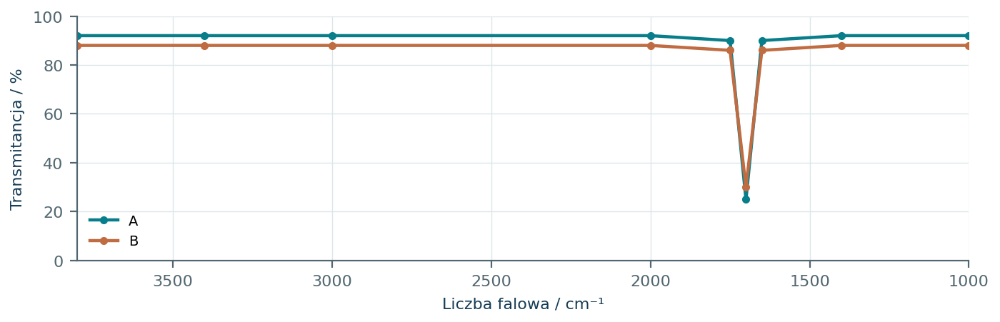
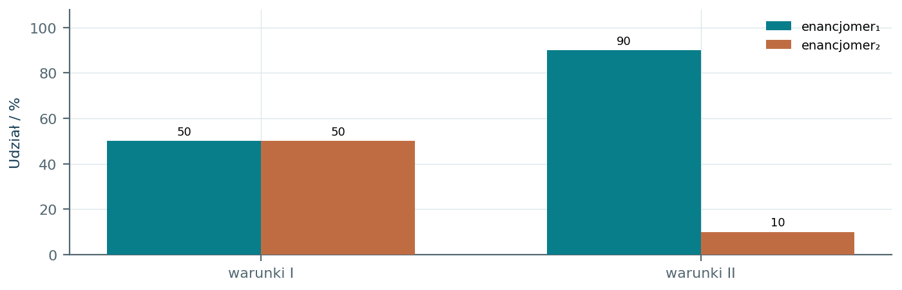
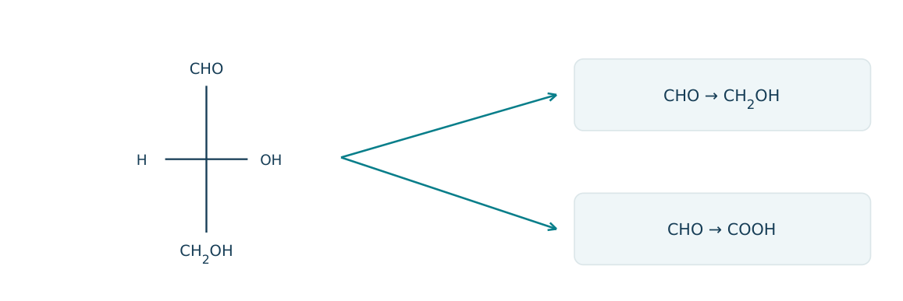

15.01 · 1 pkt
Wyjaśnij różnicę między homologami a izomerami, podając po jednej parze przykładów.
Rozwiązanie
- Homologi różnią się np. o CH2: etan i propan; izomery mają ten sam wzór sumaryczny i różną budowę: butan i 2-metylopropan.
50 zadań · 94 pkt · odpowiedzi rozwijane po samodzielnej próbie
← KatalogZadania PDFRozwiązania PDFDane do obliczeń: H 1; C 12; N 14; O 16; Na 23; Mg 24; Al 27; P 31; S 32; Cl 35,5; K 39; Ca 40; Cr 52; Mn 55; Fe 56; Cu 64; Zn 65; Ag 108; Br 80; I 127; Ba 137 (g/mol). NA = 6,02·1023 mol-1. Vm = 22,4 dm3/mol w warunkach normalnych (0°C, 1013 hPa). W 25°C Kw = 10-14. Dane podane w zadaniu mają pierwszeństwo.
Wyjaśnij różnicę między homologami a izomerami, podając po jednej parze przykładów.
Oceń zdania A i B, wpisując P albo F. Każde zdanie fałszywe popraw lub krótko uzasadnij. A: Enancjomery są niepokrywającymi się odbiciami lustrzanymi. B: Każdy związek z dwiema grupami CH3 przy jednym C jest chiralny.
Nazwij CH3CH(CH3)CH2CH3.
Napisz wzór półstrukturalny 3-metylopentan-2-olu.
Nazwij CH3CH2CHO i CH3COCH3.
Nazwij CH3CH2COOH i CH3COOCH2CH3.
Wskaż grupy funkcyjne w HOCH2COOH i H2NCH2COOH.
Narysuj oba izomery konstytucyjne C4H10 i określ typ izomerii.
Narysuj trzy izomery konstytucyjne C5H12 i podaj nazwy.
Podaj przykład izomerii położenia grupy OH dla C3H8O.
Podaj przykład izomerii grup funkcyjnych dla C3H6O.
Podaj przykład izomerii grup funkcyjnych dla C2H4O2.
W 2-metylobutanie określ liczby atomów C pierwszo-, drugo- i trzeciorzędowych.
Dlaczego but-2-en ma izomery cis-trans, a but-1-en nie?
Narysuj cis-but-2-en i trans-but-2-en. Zaznacz położenia grup CH3 względem C=C.
Przykładowy rysunek rozwiązania znajduje się w PDF-ie z rozwiązaniami przy tym numerze.
Czy 2-metylobut-2-en wykazuje izomerię geometryczną? Uzasadnij.
Wskaż centrum stereogeniczne w CH3CH(OH)COOH.
Dlaczego CH3CH(OH)CH3 jest achiralny?
Narysuj w projekcji Fischera oba enancjomery kwasu mlekowego. Umieść COOH u góry i CH3 u dołu.
Przykładowy rysunek rozwiązania znajduje się w PDF-ie z rozwiązaniami przy tym numerze.
Wyjaśnij, czym różnią się enancjomery od diastereoizomerów.
Jaką aktywność optyczną ma mieszanina równomolowa enancjomerów? Uzasadnij.
Czy oznaczenie D jednoznacznie wskazuje dodatni kierunek skręcania światła?
Związek ma dwa centra stereogeniczne i nie ma formy mezo. Oblicz maksymalną liczbę stereoizomerów oraz liczbę par enancjomerów.
Dlaczego cząsteczka z centrami stereogenicznymi może być achiralna? Odwołaj się do formy mezo.
Zaklasyfikuj reakcję CH2=CH2+H2→CH3CH3 według typu procesu.
Zaklasyfikuj CH3CH2Br+OH-→CH3CH2OH+Br- według typu i mechanizmu.
Zaklasyfikuj CH3CH2OH→CH2=CH2+H2O według typu procesu.
W CH4+Cl2→CH3Cl+HCl przy świetle podaj typ i mechanizm reakcji.
Wskaż nukleofil i elektrofil w reakcji OH- z CH3Br.
Dlaczego wiązanie pi alkenu może reagować z elektrofilem?
Związek ma 4 atomy C, 10 H i 1 O w cząsteczce. Oblicz masę molową i procent masowy tlenu.
Informacja: dla węglowodorów indeks niedoboru wodoru DBE=(2C+2-H)/2. Oblicz DBE dla C6H6 i podaj, ile łącznie pierścieni i wiązań pi opisuje.
Korzystając z DBE=(2C+2-H)/2, porównaj C6H12 i C6H10. Czy sam wzór C6H12 pozwala rozróżnić cykloalkan i alken?
Dlaczego nie można nazwać CH3CH2CH(CH3)CH2CH3 jako 3-etylobutanu? Podaj poprawną nazwę i regułę.
Dwa związki mają wzór C2H6O. Jeden reaguje z Na, drugi nie. Zaproponuj ich wzory i wyjaśnij rozróżnienie.
Porównaj temperatury wrzenia pentanu i bardziej rozgałęzionego 2,2-dimetylopropanu.
W projekcji Fischera A: COOH u góry, CH3 na dole, OH po prawej; B ma OH po lewej. Określ relację A/B i ich wzajemny wpływ na skręcalność w mieszaninie 1:1.
W CH3CH=CHCH(OH)CH3 wskaż elementy mogące powodować stereoizomerię i podaj maksymalną liczbę stereoizomerów bez form mezo.
Czy chiralne enancjomery muszą mieć różne temperatury wrzenia w środowisku achiralnym? Porównaj też znak skręcalności.
Z danych: A i B mają ten sam wzór sumaryczny, inne połączenia atomów; C i D te same połączenia, lecz są odbiciami lustrzanymi nie do nałożenia. Nazwij oba rodzaje relacji.
Każdy numer 41-50 oznacza jedno zadanie główne; podpunkty są oceniane osobno.
Wzory A-D mają po pięć atomów C. Każda cząsteczka zawiera jedną grupę karbonylową i nie ma innych pierścieni ani wiązań wielokrotnych. Odczytaj połączenia z rysunku, nie z kolejności liter.

15.41.1 (2 pkt) Podaj nazwy A-D i wspólny wzór sumaryczny.
15.41.2 (1 pkt) Wskaż parę izomerów położenia grupy oraz parę izomerów różnych grup funkcyjnych.
15.41.3 (1 pkt) Wskaż cząsteczkę chiralną i uzasadnij zestawem podstawników.
A=pentanal; B=pentan-2-on; C=pentan-3-on; D=2-metylobutanal; C5H10O.
B/C: położenie; np.A/B: aldehyd/keton.
D: atom CH ma H, CH3, C2H5, CHO, czyli cztery różne podstawniki.
Rysunki przedstawiają dwa alkohole o wzorze C5H12O. A utlenia się łagodnie do ketonu, B nie daje analogicznej reakcji bez rozerwania C-C. Każdy atom należy interpretować zgodnie z połączeniami na rysunku.

15.42.1 (2 pkt) Nazwij A i B oraz określ rzędowość grupy alkoholowej.
15.42.2 (1 pkt) Wskaż centrum stereogeniczne A i wyjaśnij achiralność B.
15.42.3 (1 pkt) Napisz wzór ketonu z utleniania A.
A=3-metylobutan-2-ol, II-rzędowy; B=2-metylobutan-2-ol, III-rzędowy.
A: C2 zOH ma cztery różne podstawniki; B: CzOH ma dwie grupy CH3.
CH3COCH(CH3)CH3, 3-metylobutan-2-on.
Na rysunkach A-C pokazano trzy alkeny. Nie należy wnioskować o istnieniu izomerii geometrycznej tylko z samej obecności C=C. Liczy się zestaw dwóch podstawników przy każdym atomie C wiązania podwójnego.

15.43.1 (2 pkt) Wskaż alkeny zdolne do stereoizomerii geometrycznej i uzasadnij.
15.43.2 (1 pkt) Ile geometrycznych form ma każdy z B i C, pomijając inne rodzaje stereoizomerii?
15.43.3 (1 pkt) Oblicz n(H2) do całkowitego uwodornienia po 0,0200 mola każdego z A-C.
B i C; każdy C=C ma po dwa różne podstawniki. W A terminalny C ma dwa H.
Po dwie.
Każdy ma jedno C=C, łącznie 0,0600 mola H2.
Cztery projekcje dotyczą HOOC-CH(OH)-CH(OH)-COOH. We wszystkich COOH jest u góry i u dołu. W projekcji Fischera wiązania poziome kierują się do obserwatora, pionowe w głąb. Można obracać cały wzór o 180° w płaszczyźnie.

15.44.1 (2 pkt) Ustal relacje A/B oraz C/D.
15.44.2 (1 pkt) Ustal relację A/C i rzeczywistą liczbę różnych stereoizomerów w zestawie.
15.44.3 (1 pkt) Wyjaśnij, dlaczego dwa centra stereogeniczne nie gwarantują chiralności całej cząsteczki.
A i B to ta sama forma mezo; C i D są parą enancjomerów.
A/C: diastereoizomery; łącznie trzy różne stereoizomery.
Forma mezo ma wewnętrzną symetrię i jest pokrywalna z odbiciem lustrzanym mimo dwóch takich centrów.
Projekcje przedstawiają butan-2-ol. Dla enancjomeru A w danych warunkach skręcalność próbki o umownym stężeniu wynosi+10°. Dla mieszanin przy tym samym łącznym stężeniu przyjmij alpha_obs=(xA-xC)·10°.

15.45.1 (2 pkt) Rozstrzygnij, czy A/B są enancjomerami, oraz określ relację A/C.
15.45.2 (1 pkt) Oblicz alpha_obs dla mieszaniny 60%A i 40%C.
15.45.3 (1 pkt) Jaki skład A/C daje zerową skręcalność i czy oznacza to achiralność pojedynczych cząsteczek?
A i B są identyczne po obrocie 180°; A i C są enancjomerami.
(0,60-0,40)·10°=+2,0°.
50: 50; to racemat, cząsteczki nadal są chiralne, znoszą się ich wkłady optyczne.
Podano DBE=(2C+2+N-H-X)/2, gdzie X oznacza liczbę fluorowców, a O nie występuje we wzorze. Na rysunku A to bromobenzen, B nienasycony amid. Jeden pierścień lub jedno wiązanie pi daje 1 jednostkę DBE.

15.46.1 (2 pkt) Ustal wzory sumaryczne i DBE obu związków.
15.46.2 (1 pkt) Powiąż wartości z widocznymi pierścieniami i wiązaniami pi.
15.46.3 (1 pkt) Podaj hybrydyzację i stopień utlenienia karbonylowego C w B.
A: C6H5Br, DBE=4; B: C4H7NO, DBE=2.
A: 1 pierścień+3 pi; B: 0 pierścieni+2 pi(C=C i C=O).
sp2; +III (C=O daje+2, C-N daje+1, C-C daje 0).
Uczeń nazwał cząsteczkę na rysunku „2,3-dietylobutanem”. Zastosuj regułę najdłuższego łańcucha i nie licz rzędowości atomu C na podstawie samej liczby H w całej cząsteczce.

15.47.1 (2 pkt) Podaj poprawną nazwę i wzór sumaryczny.
15.47.2 (1 pkt) Policz atomy C pierwszo-, drugo- i trzeciorzędowe.
15.47.3 (1 pkt) Dlaczego nazwa ucznia nie określa poprawnie wybranego szkieletu głównego?
3,4-dimetyloheksan; C8H18.
Pierwszorzędowe 4, drugorzędowe 2, trzeciorzędowe 2.
Wybrany butan ma 4 C, chociaż istnieje ciągły łańcuch 6 C; etylowe fragmenty trzeba włączyć do łańcucha głównego.
W uproszczonym widmie głęboki sygnał przy około 1700 cm-1 wskazuje C=O, a szerokie pasmo 3200-3600 cm-1 grupę O-H. A i B mają C3H6O i oba widma na rysunku. A daje Tollensa, B nie.

15.48.1 (2 pkt) Wyciągnij dwa wnioski o grupach funkcyjnych z samych widm.
15.48.2 (1 pkt) Na podstawie obu metod ustal A i B.
15.48.3 (1 pkt) Dlaczego samo pasmo karbonylowe nie rozróżniało tych dwóch izomerów w tym zadaniu?
Oba mają C=O; brak szerokiego pasma O-H w zadanym schemacie.
A=propanal CH3CH2CHO; B=propan-2-on CH3COCH3.
Oba zawierają C=O, a dostarczona informacja IR nie rozróżnia aldehydu od ketonu; potrzebna była próba chemiczna.
Redukowano butan-2-on. W warunkach I powstały jednakowe ilości enancjomerów alkoholu, w II udziały wynosiły 90: 10. Wykres przedstawia skład produktów; ee=|x1-x2|·100%.

15.49.1 (2 pkt) Ustal alkohol i wyjaśnij powstanie centrum stereogenicznego.
15.49.2 (1 pkt) Oblicz ee i wskaż mieszaninę racemiczną.
15.49.3 (1 pkt) Czy taka sama redukcja propanonu musiałaby dawać parę enancjomerów?
Butan-2-ol; po redukcji C=O powstaje C zH, OH, CH3, C2H5.
I: ee=0%, racemat; II: ee=80%.
Nie, propan-2-ol ma dwie identyczne grupy CH3 i jest achiralny.
Schemat przedstawia D-gliceraldehyd w projekcji Fischera i dwa kierunki przemiany grupy CHO: redukcję do CH2OH oraz utlenienie do COOH. Pozostałe połączenia przy środkowym C nie zmieniają się.

15.50.1 (2 pkt) Napisz wzory obu produktów.
15.50.2 (1 pkt) Porównaj chiralność produktów i wyjaśnij różnicę.
15.50.3 (1 pkt) Czy D oznacza, że wyjściowy związek musi skręcać światło w prawo?
Redukcja: HOCH2CH(OH)CH2OH; utlenienie: HOOCCH(OH)CH2OH.
Glicerol achiralny, bo ma dwie grupy CH2OH; hydroksykwas chiralny, bo podstawniki COOH i CH2OH są różne.
Nie; D opisuje konfigurację względną, a znak skręcalności wymaga pomiaru.